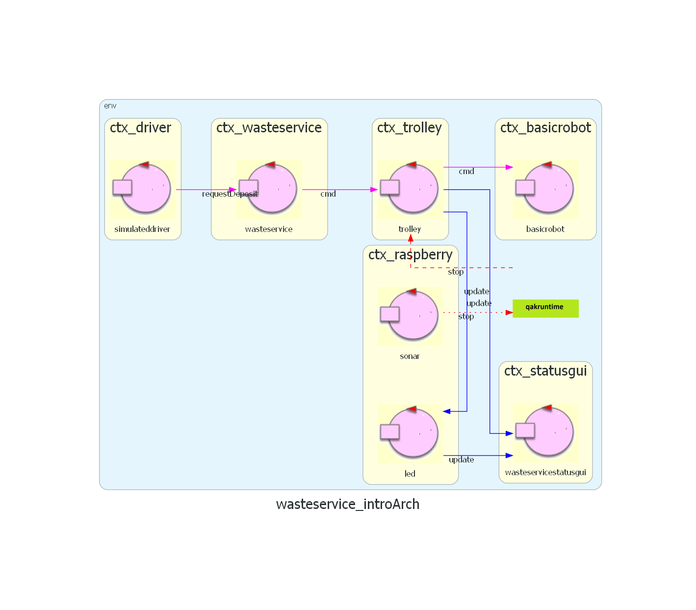

Questo documento riassume le premesse e le fasi di sviluppo del progetto WasteService realizzato da Filippo Lenzi e Lorenzo Guerra.
Seguendo il framework di sviluppo SCRUM, la progettazione è stata divisa in 3 SPRINT:
SPRINT 1 : progettazione della logica core business, vale a dire WasteService e Trolley, con azione di deposito e componenti annessi.
SPRINT 2 : progettazione delle componenti Led e WasteServiceStatusGUI, raggruppate data la simile funzionalità ed esigenze.
SPRINT 3 : progettazione della componente Sonar, e funzionalità annesse.
Ogni SPRINT ha un documento annesso che contiene requisiti, analisi dei requisiti, analisi del problema, progettazione e sviluppo, test e deploy. I test plan sono stati pensati quanto prima possibile nel corso dello sviluppo di ciascuno SPRINT, e raffinati man mano che proseguivano le fasi di sviluppo.
Da una prima analisi dei requisiti del committente, visibili nei documenti dei vari SPRINT, emergono alcuni componenti necessari, riassumibili in questo grafico:

I nomi dei messaggi sono solo indicativi, così come lo è l'attore simulateddriver, che ha lo scopo di indicare l' "entry point" della logica principale del sistema. È stato deciso di usare il supporto BasicRobot22 per il controllo del DDR robot.
Durante lo sviluppo, per semplicità tutti gli attori contenuti nello stesso progetto sono stati inclusi in un unico contesto (per esempio, Trolley e WasteService); i contesti sono stati separati nell'ultimo SPRINT.
Una nota importante: questo documento è stato messo per iscritto a progetto finito, e ha lo scopo di riassumere i ragionamenti iniziali e svolti nelle varie fasi del progetto. L'analisi è stata sviluppata nel corso dei vari SPRINT, ed è visibile nei documenti dedicati.
Nelle varie fasi di analisi di questo progetto abbiamo usato come linguaggio di modellazione il linguaggio ad attori Qak, essendo il sistema da realizzare un sistema distribuito, quindi adatto ad essere rappresentato tramite attori.
├── doc
├── it.unibo.radarSystem22.domain
├── model.problema
├── model.requisiti
├── qakactor.observer
├── unibolibs
├── versioni_vecchie
├── unibo.pathexecstop
├── wasteservice.core
├── wasteservice.led
├── wasteservice.prototype
├── wasteservice.shared
├── wasteservice.sonar
└── wasteservice.statusgui
└── wasteservice.raspgui
Il progetto è interamente contenuto nella cartella WasteService che verrà
definita come root, e in /doc è possibile trovare documentazione di vario
tipo, tra cui i documenti dei vari sprint in formato markdown visualizzabili
direttamente da github e dei
file in formato html che contengono l'analisi dei requisiti, del problema, il
documento di progetto e un breve riassunto. È presente anche la documentazione
che spiega le modifiche al progetto radarSystem.domain fornito dal committente e
la spiegazione del funzionamento di una utility per trasformare degli attori in
Qak Observer di una risorsa Coap.
I vari sotto progetti sono stati sviluppati nel corso dei vari SPRINT, e sono stati stabiliti all'interno dello sviluppo di ciascuno.
Analisi e prototipi
model.requisiti e model.problema: modelli eseguibili utilizzati per formalizzare l'analisi dei requisiti e del problema.wasteservice.prototype: prototipi funzionanti dell'intero sistema collegati ai vari SPRINT.Sistema reale
wasteservice.shared¹: classi e librerie in comune tra i vari sotto-progetti.wasteservice.core¹: componenti principali della business logic.wasteservice.led²: controllo del Led.wasteservice.statusgui²: web-server di WasteServiceStatusGUI.unibo.pathexecstop³: versione modificata dell'attore pathexec di BasicRobot22.wasteservice.sonar³: supporto per Sonar.Librerie e supporti
qakactor.observer²: estensione di Qak per attori-osservatori, successivamente inclusa in Qak 3.0 ma usato comunque per alcune funzionalità aggiuntive specifiche.it.unibo.radarSystem22.domain³: versione 2.0 della libreria realizata per progetti passati, che permette l'osservazione del sonar.Aggiunte e test
wasteservice.raspgui³: webapp per simulare componenti del Raspberry (Led e Sonar), pensata per l'uso con docker nel collaudo.In ogni progetto modificato in SPRINT successivi alla creazione sono state incluse cartelle src-sprintN che includono un backup del codice alla fine dello SPRINT corrispondente, per scopo di documentazione dei progressi.
¹ realizzato nello SPRINT 1
² realizzato nello SPRINT 2
³ realizzato nello SPRINT 3